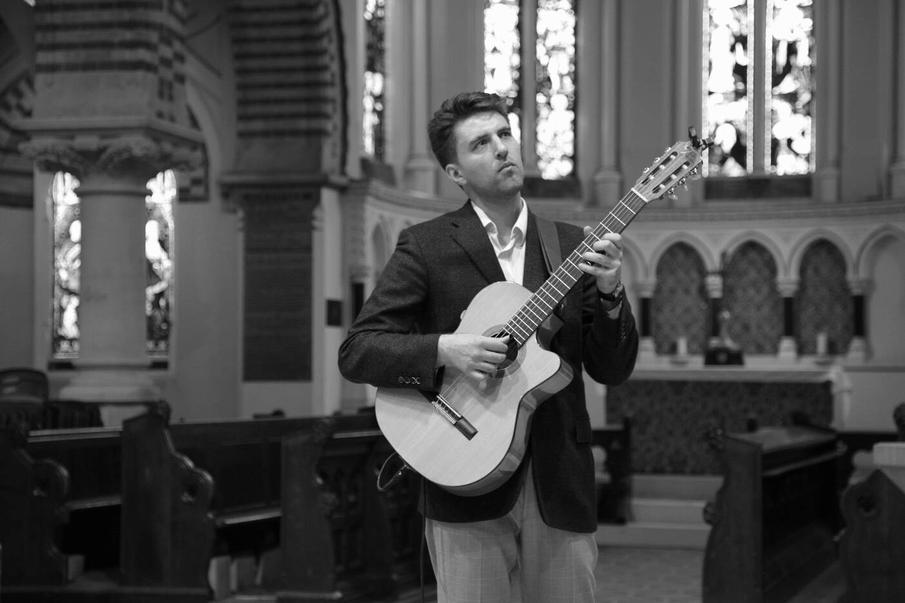

More about my music:
My main instrument is the guitar (classical, acoustic, electric - I play them all), but I also love working with other instruments and have collaborated with some incredibly talented vocalists, clarinetists, and trumpet players. Right now I am on the lookout for a guzheng player - they are not easy to come by, even in London!
People describe my music as relaxing, contemplative, mysterious, wistful, philosophical, cinematic. I tend to agree, but I am looking to expand my range.
Some of my biggest influences have come from the alternative rock scene: Cocteau Twins, Radiohead, Tindersticks. I also love classical music (Debussy, Beethoven, Delius), jazz (Mingus, Coltrane, Miles Davis) and traditional Bulgarian music (Le Mystère des Voix Bulgares).
I use the stage name Alexander Kyd to pay homage to the great playwright Thomas Kyd.
You can listen to my work on your favourite streaming platform:
My goals in tech:
I see web development as yet another outlet for my creativity. I want to learn how to make beautiful, light, engaging websites and apps.
One of my favourite quotes is by the English artist William Morris: "Have nothing in your houses that you do not know to be useful or believe to be beautiful."
In other words, I want to be part of the collective effort to make the Web more beautiful.